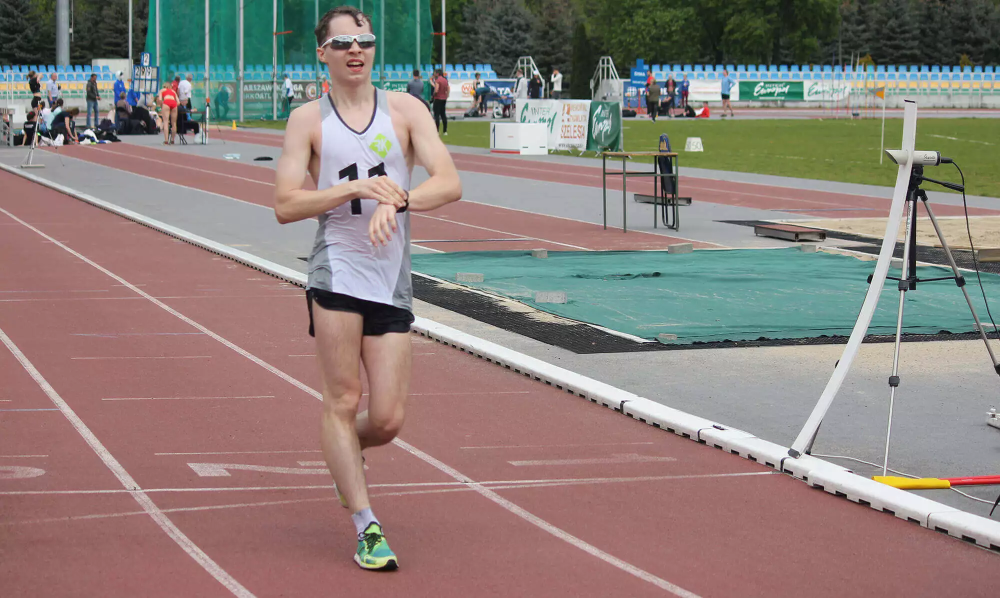
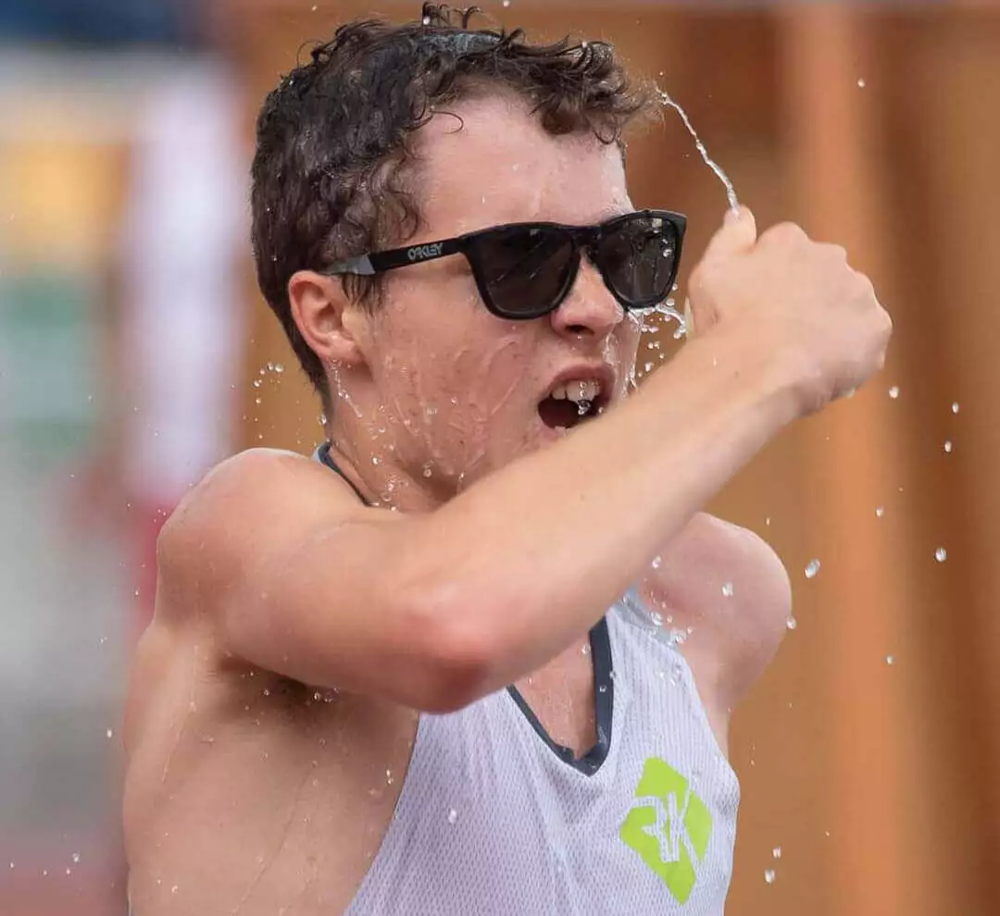
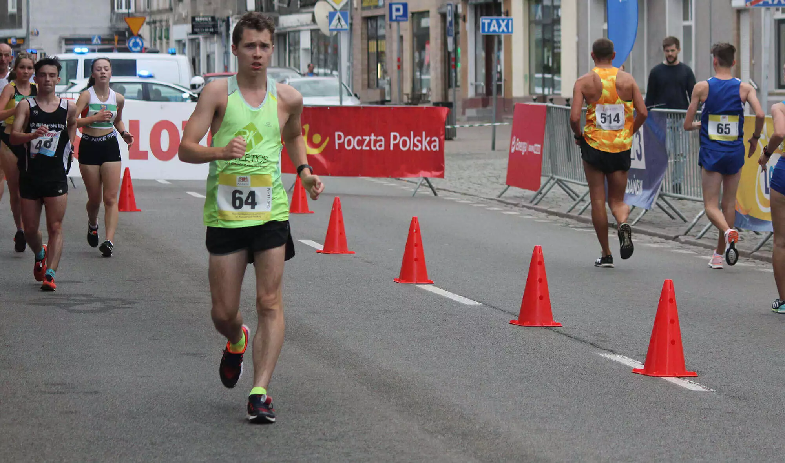
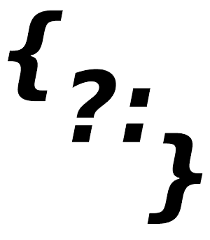

Kacper Drobik
- Programmer & race walker
Kacper Drobik
Kacper Drobik
Kacper Drobik
Kacper Drobik programmer race walker
Kacper Drobik race walker programmer
facebookMy repositories:
 Rocket Game
Rocket Game Calculator
Calculator Hangman
HangmanMy achievements
Vice-championship of Poland u16- Karpacz 2021
The bronze of Polish Championship u16- Słupsk 2020
The bronze of indoor Polish championship u18- Rzeszów 2022
2 x Master of Mazovia and Warsaw- 2021 & 2020
2nd place.International competition in sport walking - Gdańsk 2021
1st place National competition of LA in memory of I. Szewińska
Copyright © 2022 Kacper Drobik